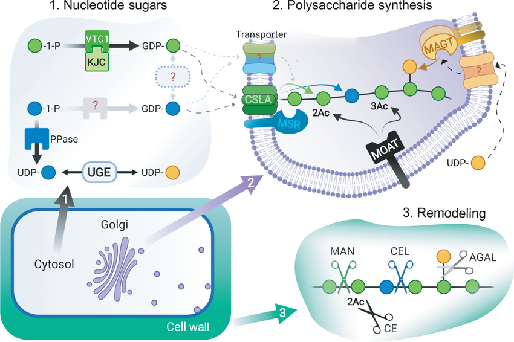

Using the Maximum Entropy Model to Enhance CSLA Enzyme β-Mannan Polysaccharide Synthesis
August 2024 - Present
Principle Investigator: Dr. Catalin Voiniciuc
Institution: University of Florida
Department: Horticultural Sciences
Research Focus:
Currently, I am a part of the AI Scholars program at the University of Florida, where I am working under Dr. Catalin Voiniciuc
at the Designer Glycans Lab, as well as Dr. Wenjun Xie.
My project is "Using the Maximum Entropy Model to Enhance CSLA Enzyme β-Mannan Polysaccharide Synthesis". I am researching how to computationally generate CSLA enzymes that produce plant β-mannan polysaccharides, with
programmable activities, using our lab's collected data of the structures and functions of such enzymes.
Mannans are a type of polysaccharide found in hemicellulose, which are critical to food, material, energy, and biomedical
industries. They are present in plant cell walls and are a major source of biomass. Structural variations, from β-mannans
in palm seeds to galactomannans in legumes, allow them to function as thickeners, stabilizers, and dietary fibers in food,
as well as renewable resources for biofuels and bioplastics.
Responsibilities:
I have used Dr. Wenjun Xie's maximum entropy (MaxEnt) model, which uses .a3m multiple sequence aligned (MSA) files as input in order to train. This model is then used to calculate the mutational energies for mutations in CSLA enzyme sequences. These mutational energies, once ranked, show how favorable a mutation is for an enzyme.
Direct Preference Optimization Model Diagram
From "Direct Preference Optimization: Your Language Model is Secretly a Reward Model" by Rafailov, Rafael, et al.

β‐mannan Biosynthesis and Remodeling
From "Modern mannan: a hemicellulose’s journey" by Voiniciuc, Cătălin
